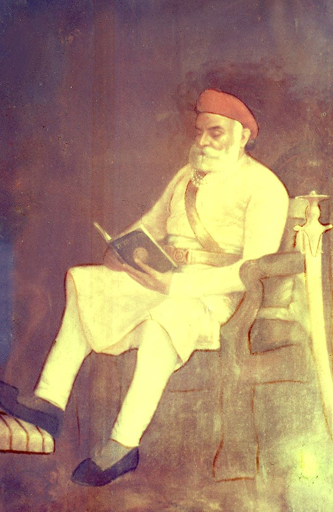
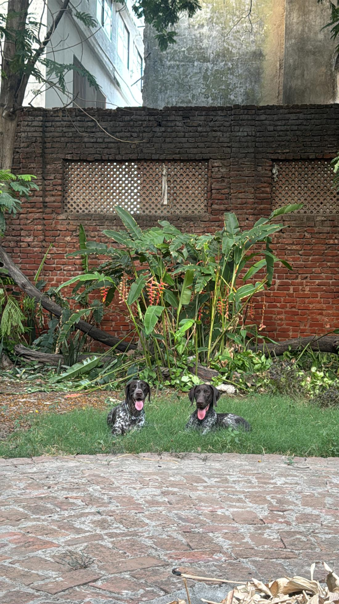
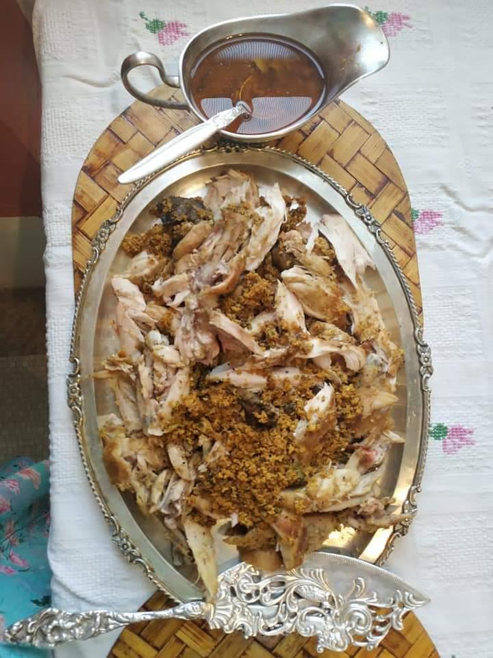

માધવ બાગ · Vadodara, Gujarat · Est. 1892
A royal mansion that never stopped being a home.
Don't scroll. Walk in.
Chapter One — The Stone Remembers
The year Shrimant Madhavrao Gaekwad — cousin of Maharaja Sayajirao III of Baroda — raised a mansion of red and white stone at the southern edge of the city. Indo-Saracenic arches. Jharokha balconies leaning into the evening breeze. A corner tower that has watched a century change its mind, twice.
Walls this old don't keep history. They keep family.

Chapter Two — Morning
Every morning, the sun crosses the same courtyard it has crossed for over a hundred and thirty years. The fountain murmurs its one long sentence. The old swing creaks its old song. Somewhere inside, tea is already being poured — and one of the cups is for you.
Chapter Three — The Keepers
Shivraj Gaekwad grew up beneath these arches; his grandfather built them. When time began to win against the old house, he and Indrayani Devi restored it room by room — not into a hotel, but back into what it had always been. Family photographs still line the corridors. The doors still open from the inside.
You don't check in at Madhav Bagh. You are welcomed in.
Chapter Four — The First to Greet You
She'll find you before anyone else does — unhurried, sure of herself, certain that the garden and everyone in it belong to her. Lately she shares the rounds with Zephyr, her son: all long legs and bigger ideas, learning the corners of a home she has known by heart for years. The Gaekwads will tell you the house has four guest rooms. Stella will tell you every lap in it is hers — and Zephyr is still working out which ones are his.
Every home has a heart. This one just grew a second.

Chapter Five — The Table
Indrayani Devi cooks from memory — royal Maratha recipes that travelled with brides and treaties from Thanjavur, Gwalior, Kolhapur and Baroda, refined over a century of family tables. Some evenings it is a silver thali by lamplight. Some mornings, waffles under the trees. Both taste like belonging.

Chapter Six — Four Jewels
Room I — of IV
Blue as a Baroda midnight. Velvet, lamplight, and a hush that money can't build — only time can.
Room II — of IV
Chandeliers and Victorian lamps. Light here has manners — it arrives softly and stays late.
Room III — of IV
The colour of dawn on the old façade. Warm, bright-hearted, impossible to leave grumpy.
Room IV — of IV
Deep red, like the mansion's own stone. The room the house seems proudest of.
Chapter Seven — Two Acres of Green
Two acres of garden in the middle of a working city. Mornings belong to birdsong; evenings to fireflies. Ten minutes away, the Vishwamitri keeps its crocodiles and the old city keeps its palaces, its festivals, its music. Wander far. Dinner is at eight.
Epilogue — The Light Is On
Some places you visit.
Some places keep a light on for you.
Opposite O.N.G.C. Main Gate, Makarpura Road,
Vadodara, Gujarat 390009 — India